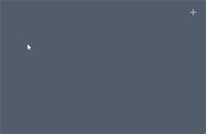
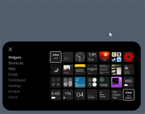
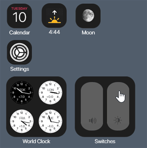
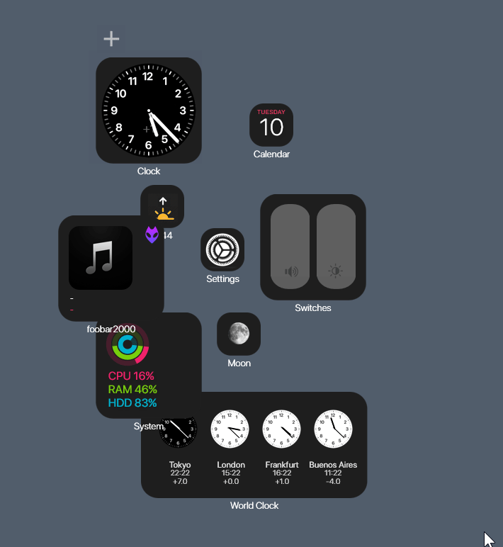
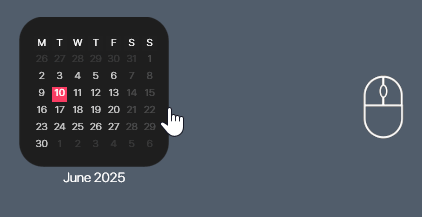
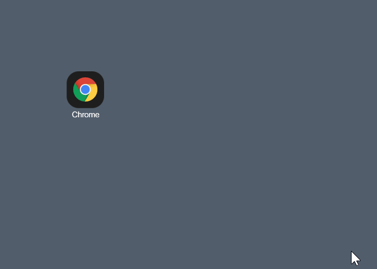
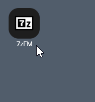

Press the + Button, or right-click any item and select "Add Items", to open the Gallery
Add a Widget by clicking it in the Gallery, then you can position it on your Desktop
Move Widgets anywhere on your Desktop
Use the Align tool under the + Icon to auto-snap Widgets
Many Widgets have Alternatives in 3 Sizes
Change what a Shortcut does by selecting a .lnk (Shortcut) or .exe (Program)
Most Items have Settings where you can change things
Check our Discord or the Rainmeter Documentation site for more help